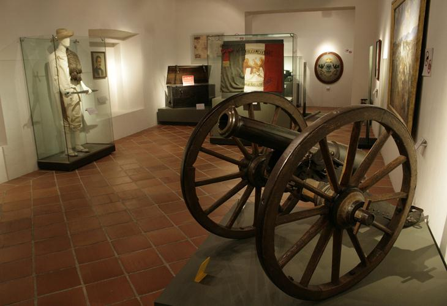
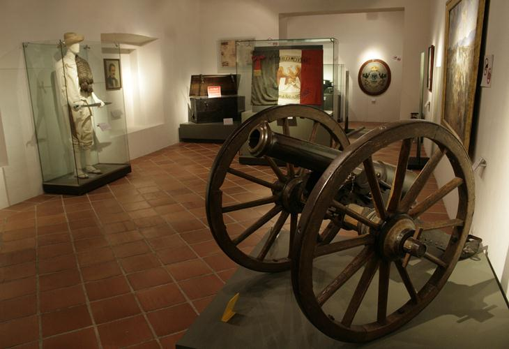

A las 9:15 de la mañana del 5 de mayo, los franceses aparecieron en el horizonte, avanzando desde la cercana Hacienda de Rementería, cruzando fuego con las guerrillas de caballería que se batían en retirada y que no se replegaron hasta que las líneas francesas estuvieron formadas y listas para avanzar. La batalla se inició en forma a las 11:15 de la mañana, anunciándose con un cañonazo desde el Fuerte de Guadalupe y acompañado por los repiques de las campanas de la ciudad. En ese momento se dio una maniobra sorpresiva: la columna francesa, que venía avanzando en orden de oriente a poniente, se dividió en dos: la primera, compuesta por aproximadamente 4000 hombres y protegida con su artillería, dio un violento viraje hacia la derecha y se dirigió hacia los fuertes; mientras que la segunda columna, compuesta por el resto de la infantería, quedó como reserva.
Los conservadores Almonte y Antonio de Haro y Tamariz, que acompañaban a los franceses, habían sugerido que el ataque se dirigiera a las inmediaciones del ex Convento del Carmen, en el sur de la ciudad, tomando como antecedente lo que sucedió en el sitio durante la Guerra con Estados Unidos. Lorencez, confiado en la superioridad de sus tropas, así como en el auxilio que esperaba del contingente de Márquez, desoyó el consejo y decidió concentrar el ataque en los fuertes, donde los mexicanos contaban con la ventaja. Zaragoza advirtió la maniobra y rápidamente replanteó su plan de batalla, movilizando las tropas hacia las faldas del cerro. El 6o. Batallón de la Guardia Nacional del Estado de Puebla,6 bajo el mando del entonces coronel Juan Nepomuceno Méndez, fue el primer cuerpo del Ejército de Oriente en hacer frente a los franceses, al ubicarse en la línea comprendida entre los fuertes, y rechazar su ataque.7 Zaragoza hizo avanzar a las fuerzas de Berriozábal a paso veloz entre las rocas, situándolas entre la hondonada que separa a Loreto y Guadalupe. Mientras, el general Antonio Álvarez con su brigada protegió el flanco izquierdo de los reductos.
La línea de batalla mexicana formó un ángulo que se extendió desde Guadalupe hasta un sitio conocido como Plaza de Román, frente a las posiciones enemigas. Zaragoza dispuso que el general Lamadrid defendiera con las tropas potosinas y dos piezas de artillería el camino que conectaba a la ciudad con la garita de Amozoc. La derecha de la línea de batalla mexicana la cerró Porfirio Díaz con la División de Oaxaca, auxiliado por los escuadrones de Lanceros de Toluca y Oaxaca.
Los franceses continuaron su avance, colocando sus baterías frente a Guadalupe, al tiempo que devolvían el fuego mexicano proveniente de esa posición.
En ese momento los zuavos, el regimiento de élite de la infantería francesa, iniciaron su ascenso por el cerro hacia Guadalupe, perdiéndose de la vista de los fusileros mexicanos. De repente, aparecieron disparando frente a la fortificación. Sin embargo, el fuego lanzado por los mexicanos los detuvo en seco. En ese instante, los soldados de Berriozábal los recibieron con sus bayonetas, por lo que tuvieron que retirarse en buen orden hasta ponerse fuera de tiro. Se repusieron rápidamente y se lanzaron de nuevo intentando tomar el fuerte.
Los franceses, apoyados por el 1.er. y 2o. Regimientos de Infantería de Marina, se abalanzaron sobre el resto de la línea mexicana, siendo recibidos con la bayoneta. La columna francesa fue rechazada en Guadalupe y Loreto, siendo igualmente repelidos los ataques de otras columnas francesas desplegadas. En ese momento, el coronel mexicano José Rojo avisó a Antonio Álvarez que era tiempo de que la caballería mexicana entrara en acción para alcanzar una victoria completa. Ordenó a los Carabineros de Pachuca cargar sobre los restos de la columna, disparando sus carabinas y lanzando mandobles de sable sobre los franceses, siendo totalmente rechazados.
A las dos y media de la tarde, cuando se empezaba a perfilar una victoria para los mexicanos, Lorencez se dispuso a lanzar el último asalto, dirigiendo a los Cazadores de Vincennes y el Regimiento de Zuavos hacia Guadalupe, mientras ponía en marcha una segunda columna de ataque compuesta de los restos de los cuerpos de batalla —excepto el 99 de Línea, el cuál quedó de reserva en el campamento francés—, para atacar por la derecha de la línea de batalla mexicana.
Ante esta situación, salieron a su encuentro los Zapadores de San Luis Potosí, al mando del general Lamadrid, librándose un terrible combate a la bayoneta. Una casa situada en la falda del cerro fue el objetivo. Los franceses la tomaron y se guarecieron en ella, siendo desalojados por los zapadores; la recobraron y de nuevo fueron expulsados por las tropas de Lamadrid. Un cabo mexicano de apellido Palomino se mezcló entre los zuavos y se batió con ellos cuerpo a cuerpo, posesionándose de su estandarte como botín de guerra al caer muerto el portador del mismo. Este momento significó un golpe anímico a favor de los defensores.
Ya entrada la tarde cayó un aguacero sobre el campo, lo cual dificultó el avance a las tropas francesas. Zaragoza dispuso que el Batallón Reforma de San Luis Potosí saliera en auxilio de los fuertes. En Loreto había un cañón de 68 libras que causaba enormes estragos en la filas francesas. Los zuavos hicieron una carga de infantería desesperada para apoderarse de esa pieza. El artillero mexicano, sorprendido por la rapidez de los franceses, tenía en sus manos la bala de cañón que no alcanzó a colocar en la boca de fuego. Un zuavo apareció frente a él y tras éste el resto del cuerpo que, una vez apoderados de ese fortín, levantarían la moral francesa y podría perderse la victoria conseguida. El artillero arrojó la bala al soldado francés, que herido mortalmente por el golpe en la cabeza rodó al foso del parapeto. Luego de que este asalto fue rechazado, los franceses retrocedieron siendo perseguidos por el Batallón Reforma.
Mientras, cuando la segunda columna llegó al Fuerte de Guadalupe protegida por una línea de tiradores, Porfirio Díaz acudió en auxilio de los Rifleros de San Luis Potosí, que estaban a punto de ser rodeados. Movió en columna al Batallón Guerrero, a las órdenes del coronel Jiménez, y le ganó el terreno a los franceses. Para apoyar envió al resto de las tropas de Oaxaca, con los coroneles Espinoza y Loaeza a la cabeza, con lo que se logró expulsar al enemigo de las cercanías. El éxito alentó a Díaz, que destacó al Batallón Morelos con dos piezas de artillería a la izquierda, mientras por la derecha los Rifleros de San Luis Potosí se reponían de la pelea, antecedidos por una carga de los Lanceros de Oaxaca, trabándose un combate cuerpo a cuerpo que hizo retroceder a los atacantes.
En aquel momento, luego de ser repelidos por última vez, las efectivos franceses empezaron a huir, completamente dispersados. Se replegaron a la hacienda Los Álamos, para finalmente retirarse hacia Amozoc.


 1
1 3
3 6
6 7
7 8
8 10
10 11
11 12
12


 
